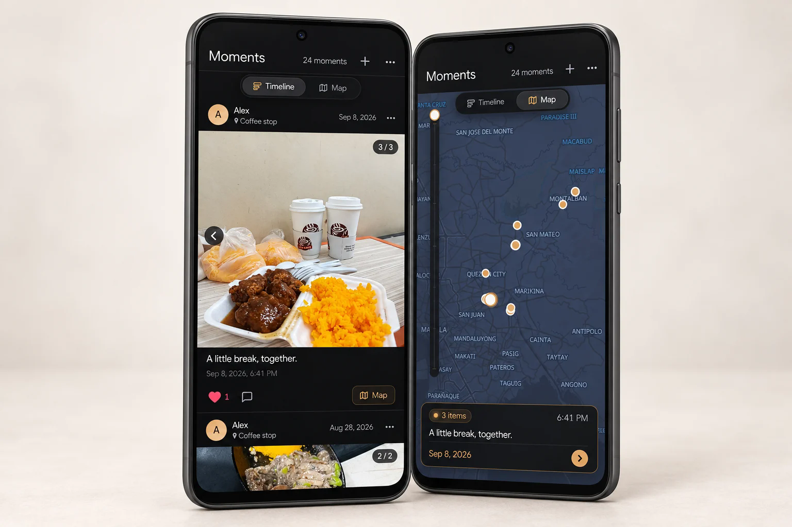

A shared timeline
Keep photos and videos in a chronological feed, with captions, comments, and likes that turn a saved image into a conversation.
The little things.
A place to keep them.
A meal together. A familiar coffee stop. Somewhere new.
Moments brings photos, videos, and the places behind them into one shared journal for two.

Photos capture what happened. A little context helps you remember why it mattered.
The idea behind Moments is simple: keep photos and videos alongside their captions, dates, and locations. A shared feed makes them easy to revisit, while a map offers another way to explore the same memories.
It’s a personal project focused on a small, familiar audience: two people sharing their everyday life.
From your phone’s share menu
to a memory you can come back to.
Keep photos and videos in a chronological feed, with captions, comments, and likes that turn a saved image into a conversation.
Browse moments on a location map. Revisit the places behind your photos and see how different days connect to familiar spots.
Send photos and videos directly from Android’s share menu into the installed web app, then add the details before saving.
SvelteKit and TypeScript power the interface. PWA support lets the journal live on the home screen, while the Web Share Target API connects it to Android’s existing sharing flow.
The service worker temporarily stages shared media in IndexedDB before the customize screen opens. The user can review the files and add context before uploading.
Supabase provides authentication, database storage, and media storage. MapLibre displays post locations, and the Bun-backed server handles media uploads and image resizing.
Designed around Android sharing. The share-target flow is not supported on iOS. The repository is available to explore; this personal journal is not offered as a public demo.